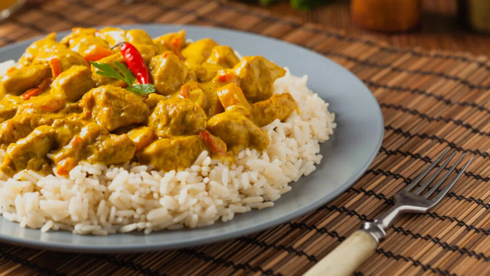

Kuracie kari

Popis
Kuracie kari je typický recept juhovýchodnej Ázie. Kari je výnimočné tým,
že je zmesou množstva výborných a veľmi zdravých korenín - kurkuma, čierne
korenie, koriander, palcát, zázvor, kardamón, klinček, škorica, kajenské
korenie a aníz.
Toto kari zvládne aj začiatočník a je vyľmi rýchle na prípravu, za
štvrťhodinku máte jedlo na stole.
Pre 4 osoby potrebujeme
- 4 kuracie prsia
- 2 cibule
- 4 strúčiky cesnaku
- 5 ČL paradajkového pretlaku
- 2 ČL kari
-
400 ml šľahačkovej smotany, ale stačí aj ľahšia smotana na varenie
- petržlenová vňať na posypanie
- olej, soľ, čierne korenie
Postup
-
Rozohrejte na panvici na miernom ohni olej. Keď je horúci, pridajte
nakrájanú cibuľu a nasekaný cesnak. Osoľte, pridajte čierne korenie a
nechajte sa dusiť a opakať za občasného miešania asi 5 minút.
-
Pridajte paradajkový pretlak a kari. Ak máte radi pikantnú príchuť,
pokojne pridajte aj čili alebo kajenské korenie. Potom premiešajte a
nechajte ešte asi 2 minúty povariť.
-
Zvýšte oheň a pridajte kuracie mäso nakrájané na kocky. Kuracie mäso
okoreňte čiernym korením, zmiešajte s ostatným obsahom panvičky a
povarte aspoň 2 minúty.
-
Potom pridajte smotanu, dobre premiešajte a nechajte variť ešte 5 minút
na miernom ohni.
- Na záver môžete posypať trochou nasekanej petržlenovej vňate.